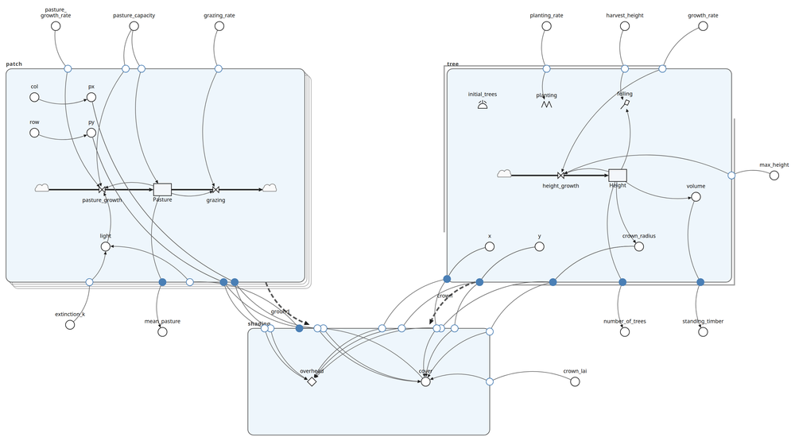

Trees over pasture
A silvopastoral field, 100 metres square: individual trees, planted and felled, grow over a pasture of 1600 patches. Each patch gets the light that passes the tree crowns directly above it, so shaded pasture grows more slowly, and under deep shade gives way to grazing.
It opens in three dimensions: press ▶ in the 3D view to watch sixty years go by, the trees growing and the pasture fading beneath them, and drag to look round. Move the sliders for the planting rate, the height at which trees are felled, the grazing rate and the density of the crowns, and see the balance between pasture and timber change.
Open in SimileThe model spec: agroforestry.json. Time in years, distances in metres, pasture in tonnes per hectare.

Simile began as AME, the Agroforestry Modelling Environment, and this is the kind of model it was made for: individuals, space, and the interactions between them, in one diagram.